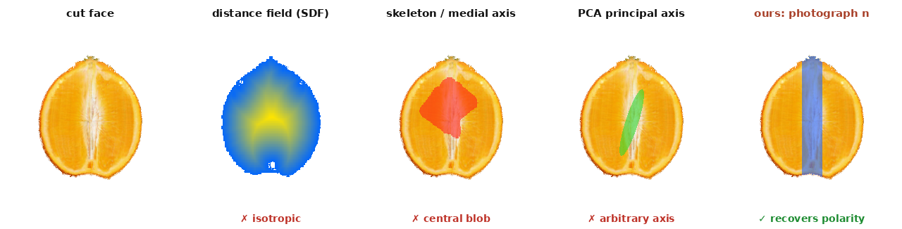
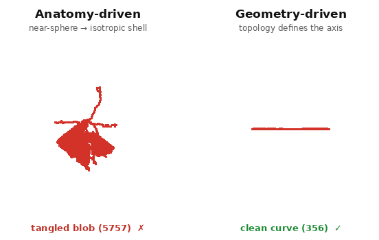
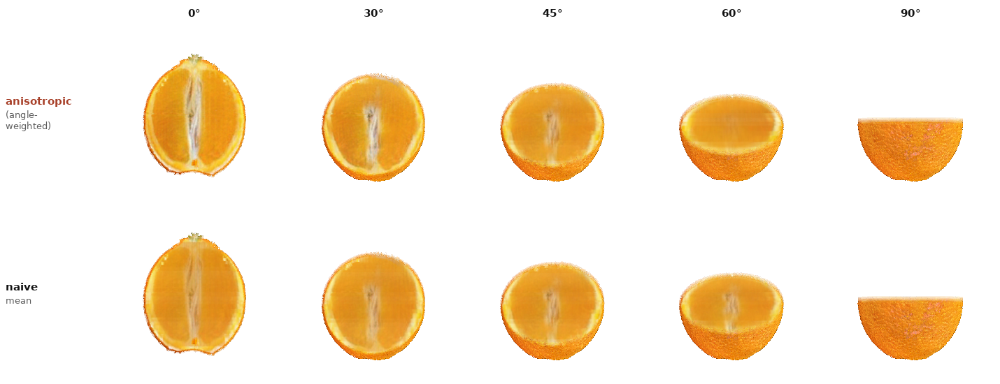
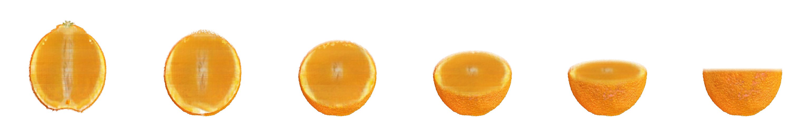
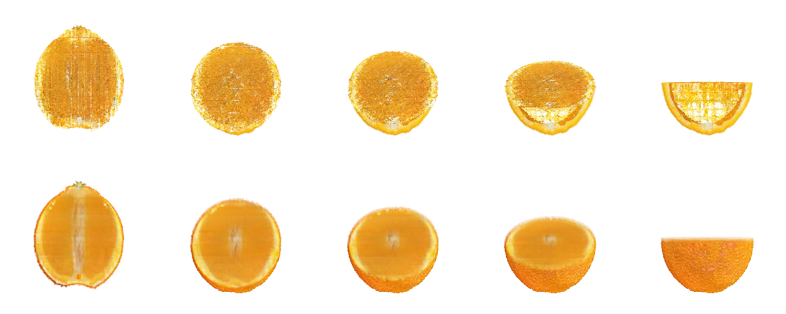

Two or three photographs per family cannot supervise a volume. The method: for every cut plane with no photograph, warp a depth-assigned reference into the silhouette and let one released single-image diffusion re-generate it — pinning only the rind, a light SDEdit that keeps the input’s structure — so the variation rides on the input, not the seed; then write the swept faces back into one 3-D field.
Preprint · work in progress
An O-Voxel gives an object a shell and a supervised skin, but its interior is only the handful of cut planes a few photographs constrain; every other depth is unseen. The task here is to fill that interior so any cut looks like a real cut of this specimen. An earlier version of this method reached photographic detail by overfitting one diffusion per plane — a 6000-step fit toward a warped reference, generated from noise with the supervised cells and background hard-pinned. It was sharp, but every seed produced the same face, and it cost a full training run per plane. The method here replaces it: one released single-image diffusion, no per-plane training, constrained only at sampling, with the variation moved onto the axis that actually carries it — the input.
SinDiffusion has a patch-scale receptive field (no attention, no bottleneck), so it resamples an image’s local statistics into new layouts. Sampled unconditionally on our orange it is genuinely diverse. But that diversity is almost entirely global layout — where the silhouette sits, the big colour blocks — and our task fixes the silhouette and boundary by construction. Measuring the per-seed standard deviation in the flesh region on one plane makes the collapse quantitative:
| regime | flesh std | outcome |
|---|---|---|
| unconditional (unconstrained) | 0.130 | diverse, consistent texture |
| per-instance overfit | 0.030 | every seed identical |
| de-leaked base + augmentation | 0.035 | still identical |
| masked resampling (RePaint) | 0.011 | even lower |
Pinning only a thin rind ring — the outpainting regime, a large free interior — does not rescue it either (std \(0.021\), and the interior loses all structure). The conclusion is that seed diversity is not a missing knob under these constraints; the correct source of variation is a different reference per plane, which is also what makes the depth sweep change with depth.
For a plane with normal \(n\) and offset \(d\), rasterise the flesh silhouette \(f\) from the O-Voxel shell. A depth-assigned reference photograph is affine-warped to fill \(f\), giving the input image \(x_0\in[-1,1]^{3\times H\times W}\). The only pinned region is a thin rind ring plus the white background,
$$k \;=\; \big(f \wedge \neg\,\mathrm{erode}(f)\big)\;\vee\;(1-f),$$and the interior — segments, juice vesicles, columella — is left entirely to the model. Generation is SDEdit: noise the input to a fraction \(\rho\) of the schedule and denoise from there, re-pinning the ring after every reverse step,
$$x_{\rho T}=\sqrt{\bar\alpha_{\rho T}}\,x_0+\sqrt{1-\bar\alpha_{\rho T}}\,\epsilon,\qquad x_{t-1}=k\odot\big(\sqrt{\bar\alpha_{t}}\,x_0+\sqrt{1-\bar\alpha_{t}}\,\epsilon_t\big)+(1-k)\odot\Phi(x_t,t),$$with \(\Phi\) one unconditional DDPM reverse step. The strength \(\rho\) is the whole trade-off: at \(\rho\!\approx\!0.55\) the model washes the interior to a canonical smooth blob and the input stops mattering; at \(\rho\!\approx\!0.25\) the input’s structure survives, the diffusion only harmonises it into this plane’s silhouette and rind, and different references give visibly different, sharp cut faces. There is no per-plane training: a face is generated in a second.
The pith is a thin core along the fruit’s axis; whether a plane shows it is not a texture choice but an intersection. With a core cylinder of radius \(r_c\!\approx\!0.13\,R\) about the axis, a longitudinal plane at perpendicular offset \(s\) meets it over a band of half-width
$$w(s)=\sqrt{\,r_c^{2}-s^{2}\,}\ \ (\,|s|The obvious objection to \(w(s)\) is that the axis it needs should come from the shell, not from a photograph: extract a medial axis, or a signed distance field, or a principal direction, and derive the core geometrically. For this object that is impossible in principle, and the failure has a clean statement.
Claim. When the shell is rotationally near-symmetric (an \(SO(3)\)-isotropic boundary — citrus, tomato, an eyeball, most organs), the boundary carries no information about the anatomical polarity of the interior. A sphere has no preferred axis, so any shell-only operator — SDF, skeletonisation, PCA — either returns a rotationally-ambiguous answer or an artefact of the discretisation, never the stem–blossom axis the pith actually follows. The interior axis is decoupled from the boundary; only the orthogonal cut photographs, through their normals \(n\), supply it.

This scopes when a geometric core-extractor is the right tool and when it is not:

Both cut families feed one field. The longitudinal sweep is generated from the or_long references with the geometric pith crop above; the transverse sweep is generated from or_trans orange-wheel references, whose central pith needs no crop — every transverse plane crosses the axis, so the columella is simply a dot at the centre. Each generated face \(r_p\) is splatted back over a slab whose half-width is set to just over half the inter-plane spacing, so neighbouring planes tile the depth range with no unwritten gap; a cell’s colour is the mean of every reconstructed pixel that projects into it,
with \(\pi\) the plane-to-cell projection. Both families together fill the field in about seven seconds; that one field is what every cut renders (slab, thickness \(2.82\) cells) — longitudinal and transverse read out of the same voxels.
Two limits are honest and open. The write-back into the discrete lattice, plus the slab integration, softens faces that were sharp in 2-D — the same voxel-storage cost the shared lift pays; keeping the 2-D sharpness means generating each frame at render time instead of storing it. And the core is thin, so only the one or two most central planes carry a columella; the depth gating is correct but visually sparse.
Averaging the two families into one field is the simplest fusion, but it dilutes a longitudinal cut with transverse evidence and vice versa. A better rule keeps a separate field per family, \(C^{v}\) and \(C^{h}\), and blends them at query time by how well the queried cut normal \(n\) aligns with each family’s own normal:
$$C(n)=\omega_v\,C^{v}+\omega_h\,C^{h},\qquad \omega_v=\frac{\cos^{k}\!\angle(n,n_v)}{\cos^{k}\!\angle(n,n_v)+\cos^{k}\!\angle(n,n_h)},\quad k=4,$$with \(\omega_h=1-\omega_v\). A longitudinal query reads almost entirely the field built from longitudinal photographs, a transverse query the transverse field, and an oblique query a smooth mix — so every direction is reconstructed by the evidence that actually constrains it, and the object stays consistent whichever way it is opened. The gain is largest at the pure axes (a crisper columella at \(0^\circ\)); it is modest on the orange only because its two fields already agree.

Because the write-back stores a colour per cell rather than a set of pre-rendered images, the field is a filled volume: \(99.9\%\) of interior cells are written, and any plane — including orientations never generated — reads its face straight out of the voxels. Tilt the cut normal continuously from longitudinal to transverse,
$$n(\theta)=\cos\theta\,n_{\parallel}+\sin\theta\,n_{\perp},\qquad \theta:0\to\tfrac{\pi}{2},$$and the columella passes from a vertical stripe to a central dot with no discontinuity, because it was stored consistently in 3-D. One colour per cell is the price: the interior is exact for the families written into it and merely plausible for a strongly oblique cut — the single-value-per-cell limit any voxel interior carries — but every cut is filled and renders instantly.

Nothing above is orange-specific. Per object the only things that change are its own single-image diffusion (trained on that object’s cut photograph) and its reference; the pipeline, the constraints, and the render are identical. The same program fills a watermelon, an apple, a pomegranate, a loaf of bread, and a layered cake — each read from its own voxel field.
Two object-general refinements earn their place across the set. A single-image diffusion erases features that are rare in its one training image — watermelon seeds, pomegranate arils — at any SDEdit strength, so the input’s dark pixels are composited back onto the generated flesh, \(r \leftarrow (1-m_s)\odot r + m_s\odot y\) with \(m_s\) the pixels darker than the flesh median (used where an object has such features, left off for the apple’s pale core). And a uniform flesh exposes a moiré the busy orange texture had hidden — aliasing between the slab’s \(n_{\text{sub}}\) samples and the lattice — so the slab is rendered at \(2\times\) and averaged down. Both are general; neither is a per-object knob.
Seven objects, one program. Each clip is a depth sweep read from that object’s voxel field; orange, watermelon and doughnut show both cut families side by side. The doughnut is the geometry-driven case of the taxonomy above — its ring topology survives the sweep, the hole staying open at every depth.
The natural objection is that a discrete voxel field should be replaced by a continuous implicit representation — a Triplane (three orthogonal feature planes decoded by a small MLP) fit to the generated cut faces, with a 3-D total-variation prior filling the gaps. We built it: three \(16\times192\times192\) planes and a two-layer MLP, supervised by the same \(3.9\times10^{5}\) sharp cut-face pixels (both families) plus 3-D TV, converging to \(1.3\times10^{-3}\) MSE in about twelve seconds. It renders any oblique angle as a full cross-section — the continuity claim holds.
But it does not improve on the voxel field; it is worse. The two cut families disagree along the line where their planes intersect, and a single continuous field can only fit a compromise — so the Triplane reconstructs a speckled, conflicted interior, exactly the projection-intersection artifact its three shared planes are supposed to prevent. The 3-D TV that would suppress the speckle only trades it for over-smoothing. The voxel field, rendered as a slab, stays cleaner because each cut reads a local neighbourhood rather than a globally-reconciled field.
